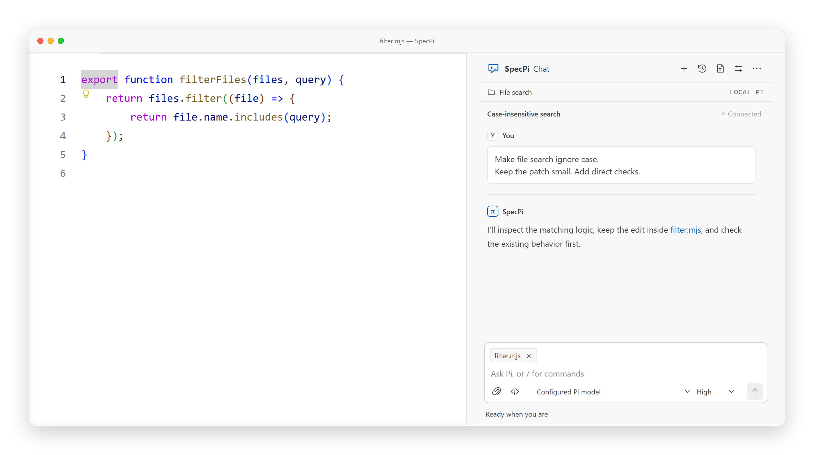
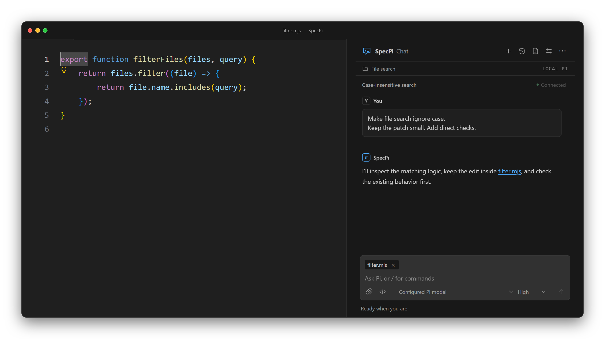
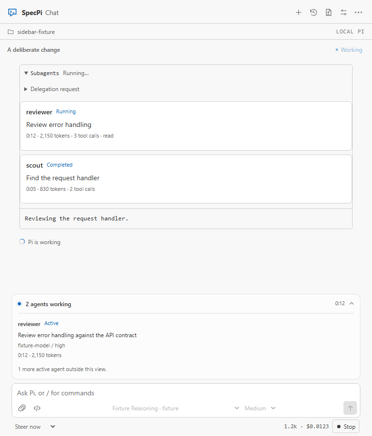
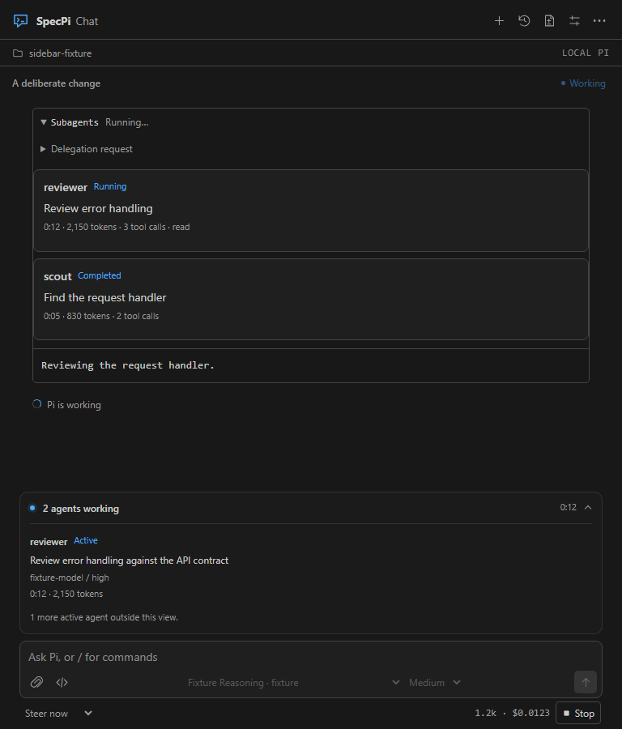

Pi, beside
your code.
Set the scope. Use the tools you need. Improve what gets in the way.
Your Pi setup. Your choice of model.


Set the scope.
Keep the work focused.
SpecPi's own extensions do two things: track a task's scope and help you improve the harness from problems you choose to address.
How scope worksThe rest comes from eight pinned packages. Your Pi setup and choice of model stay yours.
npm install --global specpi@latest
specpi plan
specpi install
specpi doctor
Node.js 22.19+ · npm · Git · existing Pi on PATH
Tested with Pi 0.84.4. Review the plan,
confirm, then restart Pi.
Human control
You choose which improvements to make.
Small, reversible changes
Keep each change focused and easy to review.
Local improvement records
Collection is disabled by default. Records stay on your machine.
Tools for the rest.
Eight packages, installed through Pi at the versions below. Each keeps its own tools, commands, and configuration.
-
pi-web-access0.29.0
Web search and page retrieval, hidden until
/webaccess on -
specpi-browser-qa0.3.0
Interaction, accessibility and visual QA
-
specpi-delegation0.2.0
Bounded subagents over a frozen snapshot
-
specpi-experiments0.1.0
Detached Git worktree experiments
-
pi-goal-x0.31.2
Persistent goals and progress
-
@sreetej510/pi-usage0.10.0
Provider usage reports
-
Tool permission policies
-
specpi-jev-guard0.4.0
Jev-scored command gate, off until you switch it on. How the Jev layer works
Confirmed install/update sets up Chromium with Node, not Bun. Use
--skip-browser-install to skip setup; specpi doctor checks real QA
readiness offline. OS libraries require manual installation. Browser QA is not general-browser
feature parity; BetterWright remains optional/manual. Pi Goal X supports Pi ≥0.83.0 and <0.85.0.
SpecPi Chat 0.16.0
Add it to VS Code.
Attach files, review approvals, and switch between conversations. Follow delegated agents, goals, and usage from the package base.
Download SpecPi Chat 0.16.0See delegated agent activity in Chat


Delegation helps on some task shapes and hurts on others. See what the evidence shows.
-
01
Set up Pi and SpecPi.
Follow the install above and confirm Pi runs in a terminal. Connect a provider there, or let Chat open that terminal for you in step 03.
-
02
Install SpecPi Chat.
In VS Code 1.96+, run Extensions: Install from VSIX… and choose the downloaded file.
-
03
Open SpecPi. Connect Pi.
Open a trusted project, select SpecPi in the Activity Bar, then choose Connect Pi.
Improving the Pi harness
Changes to the instructions, tools and workflows around Pi. You choose what changes; verification is required before an item can close.


The 0.21 base
A fresh start for SpecPi.
The old custom tools, extra commands, themes, and shell profiles are removed. Scope, the improvement loop, and Chat remain, with the eight packages above handling the supporting tools.
Updates back up managed files and preserve unrelated settings. Restart Pi and Chat connections after updating.
Read the migration guide